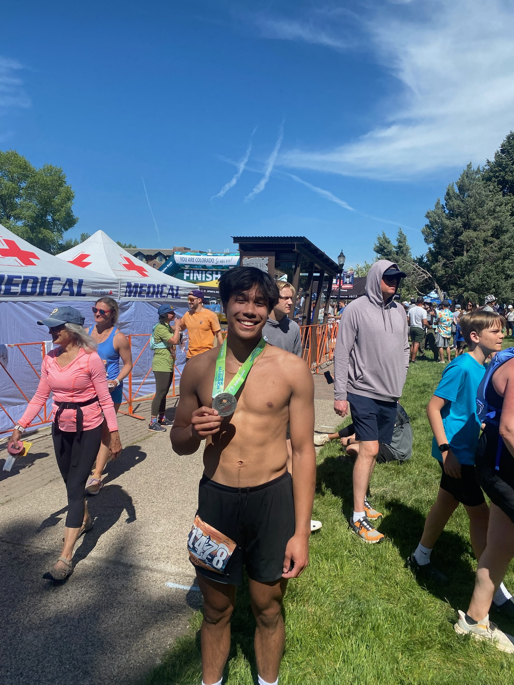

I have played the piano for 15 years and have a special love for the romantic era of classical piano. My favorite composers are Chopin, Liszt and Debussy to listen and play. Since 2023, my projects have been Chopin's Ballade No.1, Liszt's Hungarian Rhapsody No.2 and Mephisto Waltz No.1; I have finished all but the Rhapsody.
Ballade No.1 in G Minor - ChopinPiano
14ers (Hiking)
Some friends and I decided to start hiking 14ers when COVID-19 had the world in a shutdown. We started with the "easy" 14ers around the front range since none of us could drive and our parents would have to take us there and back (thank you mom and dad). Eventually, we grew to get our license and with us growing so did our ambition to climb more with our hands than our feet. We started entering Class 3/4 territory which have included Long's Peak (3), Crestone Peak (3), Mt. Neva (4) and the second flatiron (4-5). I have also picked bouldering the past year or so and have gotten a couple V7's since!

Track and Field / Running
In high school I was extremely invested in my track and field career and at the time thought that'd be my reasoning for college. I was a triple/long jumper but would do some relays here and there. I used to hold the school record for the Long jump until recently my brother took it. My relay team and I for the 4x100m and 4x200m races are still the school-record holders. I had several offers including UCCS, USAFA Academy, CMU (Co Mesa) and other out of state schools but never accepted any. Nowadays I have been following the seemingly trendy-hobby of running and ran my first half-marathon in Steamboat Springs on June 2nd!
